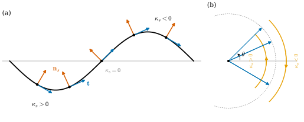
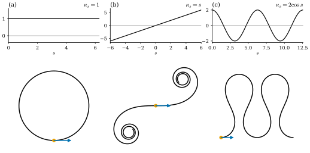

4.4 평면곡선의 부호곡률
이 절의 목표
- 정칙곡선의 단위접벡터를 정의하고, 호의 길이로 매개화된 평면곡선의 부호곡률 \(\kappa_s\)를 \(\mathbf{t}' = \kappa_s\mathbf{n}_s\)로 정의할 수 있다.
- 일반 매개변수의 공식 \(\kappa_s = (x'y'' - x''y')/((x')^2 + (y')^2)^{3/2}\)을 유도하고 계산에 쓸 수 있다.
- 부호곡률이 접선각의 변화율 \(d\theta/ds\)임을 증명하고, 곡률을 적분하면 접선이 돈 총 각도가 됨을 설명할 수 있다.
- 부호곡률이 평면곡선을 강체운동을 제외하고 결정함을 증명할 수 있다.
선수 지식
- 따름정리 4.1.12 (크기가 일정한 벡터값 함수)
- 명제 4.3.5, 정의 4.3.7 (호의 길이 매개화), 정리 4.3.9 (호의 길이 매개화의 존재와 유일성)
- 평면의 회전 \(R_\alpha\): 예 1.2.2(e)와 \(R_\alpha R_\beta = R_{\alpha+\beta}\)(연습 1.2.2)
- \(\R^2\)의 정규직교기저 \((e, f)\)에 대한 전개 \(w = \inner{w}{e}e + \inner{w}{f}f\) : 명제 1.5.9
- \(2 \times 2\) 행렬식과 기저의 방향: 정의 1.6.6, 정의 1.6.11
동기
4.3절에서 모든 정칙곡선을 호의 길이로, 곧 속력 \(1\)로 매개화할 수 있음을 보였다. 속력이 늘 \(1\)이면 속도벡터 \(\gamma'(s)\)는 크기가 변하지 않고 방향만 바뀐다. 곡선이 휜다는 것은 바로 이 방향이 바뀐다는 것이다. 직선은 방향이 전혀 바뀌지 않고, 작은 원은 큰 원보다 같은 거리를 가는 동안 방향이 더 많이 바뀐다. 그러니 “단위 길이를 가는 동안 속도의 방향이 얼마나 빨리 바뀌는가”가 휜 정도의 자연스러운 척도다.
평면에서는 여기에 부호를 붙일 수 있다. 앞으로 가면서 왼쪽으로 도는지 오른쪽으로 도는지 구별할 수 있기 때문이다. 이 절에서는 이 두 정보(빠르기와 방향)를 한 수 \(\kappa_s\)에 담는다. 그리고 이 수가 곡선을 완전히 결정한다는 놀라운 사실을 증명한다. 곡률 함수만 알려 주면, 위치와 출발 방향을 빼고는 곡선이 하나로 정해진다.

0, 가운데 원점은 κ_s=0, 오른쪽 봉우리 부분은 κ_s<0으로 표시되어 있다. (b) 다섯 단위접벡터를 원점에서 그린 그림. 끝점이 단위원 위의 −45°에서 45° 사이에 있다. 안쪽 주황 호의 화살표는 위쪽(κ_s>0 구간), 바깥쪽 주황 호의 화살표는 아래쪽(κ_s<0 구간)을 가리키고, 접선각 θ가 x축에서 잰 각으로 표시되어 있다.">단위접벡터와 부호곡률
정의 4.4.1 (단위접벡터, unit tangent vector). \(\gamma\colon I \to \R^3\)이 정칙곡선일 때 \(\mathbf{t}(t) = \gamma'(t)/\abs{\gamma'(t)}\)를 \(t\)에서 \(\gamma\)의 단위접벡터(unit tangent vector)라 한다. \(\gamma\)가 호의 길이로 매개화되어 있으면 \(\mathbf{t}(s) = \gamma'(s)\)이다.
굵은 \(\mathbf{t}\)는 벡터이고 보통 글꼴 \(t\)는 매개변수다. 명제 4.3.5(d)에 의해 방향을 보존하는 재매개화는 대응하는 점에서 단위접벡터를 바꾸지 않고, 방향을 뒤집는 재매개화는 부호만 바꾼다. 즉 단위접벡터는 자취와 방향만으로 정해지는 기하적인 양이다. 이 정의는 공간곡선에도 그대로 쓴다(5장).
이제 평면곡선만 보자. 평면에서 벡터를 반시계 방향으로 \(90^\circ\) 돌리는 선형사상을 \(J\)라 쓴다.
\(J\)는 예 1.2.2(e)의 회전 \(R_\alpha\)에서 \(\alpha = \pi/2\)인 경우다. 직접 계산으로 \(\inner{Jv}{v} = -v^2v^1 + v^1v^2 = 0\), \(\abs{Jv} = \abs{v}\), \(J^2 = -\id\)이다. 따라서 \(\abs{v} = 1\)이면 \((v, Jv)\)는 서로 직교하는 두 단위벡터, 곧 \(\R^2\)의 정규직교기저다.
\(\gamma\colon I \to \R^2\)가 호의 길이로 매개화되어 있다고 하자. \(\abs{\mathbf{t}(s)} = 1\)이므로 따름정리 4.1.12에 의해 \(\mathbf{t}'(s)\)는 \(\mathbf{t}(s)\)와 직교한다. 정규직교기저 \((\mathbf{t}, J\mathbf{t})\)로 전개하면 \(\mathbf{t}' = \inner{\mathbf{t}'}{\mathbf{t}}\mathbf{t} + \inner{\mathbf{t}'}{J\mathbf{t}}J\mathbf{t}\)이고 첫 계수가 \(0\)이므로, \(\mathbf{t}'\)은 \(J\mathbf{t}\)의 스칼라배다. 그 계수가 부호곡률이다.
정의 4.4.2 (부호곡률, signed curvature). \(\gamma\colon I \to \R^2\)가 호의 길이로 매개화된 평면곡선이라 하자. \(\mathbf{n}_s(s) = J\mathbf{t}(s)\)를 \(\gamma\)의 부호 단위법벡터(signed unit normal)라 하고,
로 정한 함수 \(\kappa_s\colon I \to \R\)를 \(\gamma\)의 부호곡률(signed curvature)이라 한다.
\(\mathbf{n}_s\)는 진행 방향 \(\mathbf{t}\)의 왼쪽을 가리킨다. 그래서 \(\kappa_s \gt 0\)이면 \(\mathbf{t}\)가 왼쪽으로, 즉 반시계 방향으로 돌고, \(\kappa_s \lt 0\)이면 오른쪽으로 돈다. 또 \(\abs{\mathbf{n}_s} = 1\)이므로 \(\abs{\kappa_s} = \abs{\mathbf{t}'} = \abs{\gamma''}\)이다. 곧 부호곡률의 크기는 단위접벡터가 변하는 빠르기이고, 호의 길이 매개화에서는 가속도의 크기와 같다. \(\kappa_s = \inner{\gamma''}{J\gamma'}\)은 매끄러운 함수들로 만든 내적이므로 매끄러운 함수다.
예 4.4.3 (원과 직선, 기준 예제). (a) 반지름 \(r\)인 원을 반시계 방향으로 도는 호의 길이 매개화 \(\gamma(s) = (r\cos(s/r),\ r\sin(s/r))\)(예 4.3.8)에서
이므로 \(\kappa_s = 1/r\)이다. \(\mathbf{n}_s = -\gamma/r\)는 원의 중심을 향한다. 반지름이 클수록 곡률이 작다. 이 값 \(1/r\)이 기준 예제의 원의 곡률이다.
(b) 같은 원을 시계 방향으로 도는 \(\bar\gamma(s) = \gamma(-s) = (r\cos(s/r),\ -r\sin(s/r))\)은 \(\bar{\mathbf{t}}(s) = -\mathbf{t}(-s)\), \(\bar{\mathbf{t}}'(s) = \mathbf{t}'(-s)\)이고 \(\bar{\mathbf{n}}_s(s) = J\bar{\mathbf{t}}(s) = -\mathbf{n}_s(-s)\)이므로 \(\bar\kappa_s(s) = \inner{\mathbf{t}'(-s)}{-\mathbf{n}_s(-s)} = -1/r\)이다. \(\bar{\mathbf{n}}_s\)는 원의 바깥을 향한다.
(c) \(\abs{v} = 1\)인 직선 \(\gamma(s) = p + sv\)는 \(\mathbf{t}' = 0\)이므로 \(\kappa_s = 0\)이다.
검증: verify/v-4-4-signed-curvature.py
비예 4.4.4 (호의 길이가 아닌 매개변수로 미분하면). 정의에서 호의 길이 매개화를 요구하는 이유를 보자. 기준 예제의 원 \(\gamma(t) = (r\cos t, r\sin t)\)에서 \(\mathbf{t}(t) = (-\sin t, \cos t)\)이고 \(d\mathbf{t}/dt = (-\cos t, -\sin t) = 1 \cdot \mathbf{n}_s\)이다. 이 계수 \(1\)을 곡률이라 부르면 모든 원의 곡률이 반지름과 상관없이 \(1\)이 되어 버린다. 계수 \(1\)이 재는 것은 “매개변수 \(t\)가 \(1\) 늘 때 접선이 도는 각”이지 “길이 \(1\)을 갈 때 도는 각”이 아니다. 연쇄법칙으로 바르게 계산하면 \(d\mathbf{t}/ds = (d\mathbf{t}/dt)(dt/ds) = \mathbf{n}_s/r\)이다. 곡선의 기하를 재려면 매개변수에 무관한 기준, 곧 호의 길이로 미분해야 한다.
일반 매개변수의 공식
실제 곡선은 호의 길이로 매개화되어 있지 않은 경우가 대부분이고, 호의 길이 매개화를 식으로 구하기도 어렵다(예 4.3.12). 그래서 일반 매개변수의 곡선에는 다음과 같이 부호곡률을 정하고, 재매개화 없이 계산하는 공식을 만든다.
\(\gamma\colon I \to \R^2\)가 정칙 평면곡선이라 하자. \(t_0 \in I\)을 하나 골라 정리 4.3.9의 방향을 보존하는 호의 길이 매개화 \(\beta = \gamma \circ h\), \(h = s^{-1}\)을 만들고, \(t\)에서의 부호곡률과 부호 단위법벡터를 \(\beta\)의 것으로 정한다: \(\kappa_s(t) = \kappa_s^\beta(s(t))\), \(\mathbf{n}_s(t) = J\mathbf{t}(t)\). \(t_0\)을 다르게 고르면 \(\beta\)는 \(\beta(\sigma + c)\)로 바뀔 뿐이고(정리 4.3.9(c)), \(\sigma\)를 평행이동해도 도함수는 대응하는 점에서 같으므로 이 정의는 \(t_0\)에 무관하다.
명제 4.4.5 (일반 매개변수에서의 부호곡률). 정칙 평면곡선 \(\gamma(t) = (x(t), y(t))\)의 부호곡률은
이고, 단위접벡터는 \(\dfrac{d\mathbf{t}}{dt} = \abs{\gamma'(t)}\,\kappa_s(t)\,\mathbf{n}_s(t)\)를 만족한다.
증명 아이디어: \(\beta = \gamma \circ h\)를 연쇄법칙으로 두 번 미분한다. \(\beta''\)에는 \(\gamma'\) 방향의 항과 \(\gamma''\) 항이 생기는데, \(J\beta'\)과 내적하면 \(\gamma'\) 방향 항은 사라진다.
증명. \(\beta(\sigma) = \gamma(h(\sigma))\)이고 정리 4.3.9의 증명에서 \(h'(\sigma) = 1/\abs{\gamma'(h(\sigma))}\)이다. 명제 4.1.11을 두 번 쓰면 (괄호 안의 \(h(\sigma)\)는 생략한다)
\[ \beta' = h'\,\gamma', \qquad \beta'' = h''\,\gamma' + (h')^2\,\gamma'' \]이다. \(J\)는 선형이므로 \(J\beta' = h'\,J\gamma'\)이고, 정의 (4.4.2)와 \(\inner{\gamma'}{J\gamma'} = 0\)에서
\[ \begin{aligned} \kappa_s^\beta(\sigma) = \inner{\beta''}{J\beta'} &= h''h'\,\inner{\gamma'}{J\gamma'} + (h')^3\,\inner{\gamma''}{J\gamma'}\\ &= \frac{\inner{\gamma''(t)}{J\gamma'(t)}}{\abs{\gamma'(t)}^3}, \qquad t = h(\sigma) \end{aligned} \]이다. 이것이 첫 번째 식이다. 성분으로는 \(J\gamma' = (-y', x')\)이므로 \(\inner{\gamma''}{J\gamma'} = -x''y' + y''x'\)이고 \(\abs{\gamma'}^3 = (x'^2 + y'^2)^{3/2}\)이다. 마지막 주장: \(\mathbf{t}(t) = \beta'(s(t))\)이므로 연쇄법칙과 (4.2.5)에서 \(d\mathbf{t}/dt = \beta''(s(t))\,s'(t) = \kappa_s(t)\,\mathbf{n}_s(t)\,\abs{\gamma'(t)}\)이다.
분자 \(x'y'' - x''y'\)은 두 열이 \(\gamma'\), \(\gamma''\)인 \(2 \times 2\) 행렬의 행렬식이다(정의 1.6.6). 그래서 \(\kappa_s \neq 0\)이면 부호곡률의 부호는 순서쌍 \((\gamma', \gamma'')\)이 \(\R^2\)의 양의 방향 기저인지(정의 1.6.11), 곧 반시계 방향으로 놓였는지를 말한다. 이 공식을 처음 쓰는 예에서는 단계를 모두 적어 둔다.
예 4.4.6. (a) 그래프. 매끄러운 \(f\)의 그래프 \(\gamma(x) = (x, f(x))\)에서 \(\gamma' = (1, f')\), \(\gamma'' = (0, f'')\)이다. 공식 (4.4.4)의 분자는 \(1 \cdot f'' - 0 \cdot f' = f''\), 분모는 \((1 + f'^2)^{3/2}\)이므로
이다. \(\kappa_s\)의 부호는 \(f''\)의 부호다. 아래로 볼록한 그래프(\(f'' \gt 0\))를 \(x\)가 커지는 방향으로 따라가면 왼쪽으로 돈다. \(f'(x_0) = 0\)인 점에서는 \(\kappa_s = f''(x_0)\)이다.
(b) 포물선. \(f(x) = x^2/2\)이면 \(\kappa_s = 1/(1 + x^2)^{3/2}\)이다. 꼭짓점 \(x = 0\)에서 최댓값 \(1\)이고, \(\abs{x} \to \infty\)이면 \(0\)으로 가서 곡선이 점점 곧아진다.
(c) 뾰족점 곡선. \(\gamma(t) = (t^2, t^3)\)은 \(t \neq 0\)에서 정칙이다. \(x' = 2t\), \(y' = 3t^2\), \(x'' = 2\), \(y'' = 6t\)이므로 분자는 \(12t^2 - 6t^2 = 6t^2\), 분모는 \((4t^2 + 9t^4)^{3/2} = \abs{t}^3(4 + 9t^2)^{3/2}\)이고
\[ \kappa_s(t) = \frac{6}{\abs{t}\,(4 + 9t^2)^{3/2}} \qquad (t \neq 0) \]이다. \(t \to 0\)이면 \(\kappa_s \to \infty\)이다. 특이점에서는 곡률이 정의되지 않을 뿐 아니라 그 근처에서 한없이 커질 수 있다.
(d) 사인 곡선. \(f(x) = \sin x\)이면 (a)에서 \(\kappa_s = -\sin x/(1 + \cos^2 x)^{3/2}\)이다. \(-\pi \lt x \lt 0\)에서 양수, \(0 \lt x \lt \pi\)에서 음수, \(x = 0\)에서 \(0\)이다 (그림 4.4.1(a)). \(x = 0\)처럼 \(\kappa_s\)의 부호가 바뀌는 점을 변곡점이라 부른다.
검증: verify/v-4-4-signed-curvature.py
부호곡률은 무엇에 따라 변하고 무엇에 따라 변하지 않는가? 평면을 움직여도 곡선의 모양은 같아야 한다. 여기서 평면의 움직임이란 \(\psi(p) = R_\alpha p + c\) (\(\alpha \in \R\), \(c \in \R^2\)) 꼴의 사상, 곧 회전한 뒤 평행이동하는 사상이다. 이런 사상을 평면의 강체운동(rigid motion of the plane)이라 한다. 또 \(\rho(x, y) = (x, -y)\)는 \(x\)축에 대한 반사다.
명제 4.4.7 (부호곡률의 변환 법칙). \(\gamma\)가 정칙 평면곡선이고 \(\kappa_s\)가 그 부호곡률이라 하자.
- (a) \(\beta = \gamma \circ h\)가 재매개화이면 \(\kappa_s^\beta(u) = \pm\kappa_s(h(u))\)이다. 부호는 \(h\)가 방향을 보존하면 \(+\), 뒤집으면 \(-\)이다.
- (b) \(\psi\)가 평면의 강체운동이면 \(\psi \circ \gamma\)의 부호곡률은 \(\kappa_s\)와 같다.
- (c) \(\rho \circ \gamma\)의 부호곡률은 \(-\kappa_s\)이다.
특히 \(\abs{\kappa_s}\)는 재매개화, 강체운동, 반사에 모두 무관하다.
증명. 모두 공식 (4.4.4)로 계산한다. (a) \(\beta' = h'\gamma'(h)\), \(\beta'' = h''\gamma'(h) + (h')^2\gamma''(h)\)이므로 명제 4.4.5의 증명과 같이 \(\inner{\beta''}{J\beta'} = (h')^3\inner{\gamma''(h)}{J\gamma'(h)}\)이다. \(\abs{\beta'}^3 = \abs{h'}^3\abs{\gamma'(h)}^3\)이므로 \(\kappa_s^\beta(u) = (h'/\abs{h'})^3\,\kappa_s(h(u))\)이고, \(h'/\abs{h'} = \pm 1\)이다.
(b) \((\psi \circ \gamma)' = R_\alpha\gamma'\), \((\psi \circ \gamma)'' = R_\alpha\gamma''\)이다(\(c\)는 미분하면 사라진다). 회전은 내적을 보존한다. 실제로 \(v = (v^1, v^2)\), \(w = (w^1, w^2)\)이면
\[ \begin{aligned} \inner{R_\alpha v}{R_\alpha w} &= (v^1\cos\alpha - v^2\sin\alpha)(w^1\cos\alpha - w^2\sin\alpha)\\ &\quad + (v^1\sin\alpha + v^2\cos\alpha)(w^1\sin\alpha + w^2\cos\alpha) = v^1w^1 + v^2w^2 \end{aligned} \]이다. 또 \(JR_\alpha = R_{\pi/2}R_\alpha = R_{\alpha + \pi/2} = R_\alpha R_{\pi/2} = R_\alpha J\)이다(연습 1.2.2). 따라서 \(\inner{R_\alpha\gamma''}{JR_\alpha\gamma'} = \inner{R_\alpha\gamma''}{R_\alpha J\gamma'} = \inner{\gamma''}{J\gamma'}\)이고 \(\abs{R_\alpha\gamma'} = \abs{\gamma'}\)이므로 공식의 값이 같다.
(c) \(\rho\)도 내적을 보존하고(\(\inner{\rho v}{\rho w} = v^1w^1 + (-v^2)(-w^2)\)), \(\rho J(x, y) = \rho(-y, x) = (-y, -x)\), \(J\rho(x, y) = J(x, -y) = (y, x)\)이므로 \(\rho J = -J\rho\)이다. 따라서 \(\inner{\rho\gamma''}{J\rho\gamma'} = -\inner{\rho\gamma''}{\rho J\gamma'} = -\inner{\gamma''}{J\gamma'}\)이다.
(a)는 부호곡률이 곡선의 자취와 방향에만 달린 양이라는 것을 확인해 준다. (b)와 (c)는 부호가 평면의 방향에도 달려 있음을 보여 준다. 반사는 “왼쪽”과 “오른쪽”을 바꾸기 때문이다.
접선각과 곡률
단위접벡터 \(\mathbf{t}(s)\)는 단위원 위의 점이므로 \((\cos\theta, \sin\theta)\)로 쓸 수 있다. 문제는 각 \(\theta\)가 \(2\pi\)의 정수배만큼 모호하다는 것이다. \(\theta(s)\)를 각 \(s\)에서 아무렇게나 고르면 불연속일 수 있다. 다음 보조정리는 \(\theta\)를 매끄럽게 고를 수 있고, 그 선택이 상수 \(2\pi m\)(\(m\)은 정수)을 빼면 유일함을 보인다.
보조정리 4.4.8 (접선각 함수의 존재). \(\mathbf{t}\colon I \to \R^2\)가 매끄럽고 \(\abs{\mathbf{t}} \equiv 1\)이라 하자. \(s_0 \in I\)이고 \(\mathbf{t}(s_0) = (\cos\theta_0, \sin\theta_0)\)이라 하자.
로 정하면 \(\theta\)는 매끄럽고 모든 \(s \in I\)에서 \(\mathbf{t}(s) = (\cos\theta(s), \sin\theta(s))\)이다. 또 연속함수 \(\tilde\theta\colon I \to \R\)도 \(\mathbf{t} = (\cos\tilde\theta, \sin\tilde\theta)\)를 만족하면, 정수 \(m\)이 있어 \(\tilde\theta = \theta + 2\pi m\)이다.
증명 아이디어: 원하는 식 \(\mathbf{t} = (\cos\theta, \sin\theta)\)를 미분하면 \(\mathbf{t}' = \theta' J\mathbf{t}\)이므로 \(\theta' = \inner{\mathbf{t}'}{J\mathbf{t}}\)이어야 한다. 그렇게 정한 \(\theta\)에 대해 \(\mathbf{t}\)를 \((\cos\theta, \sin\theta)\) 방향과 그 수직 방향으로 분해한 성분이 상수임을 미분으로 확인한다.
증명. \(\theta\)는 매끄러운 함수의 적분이므로 매끄럽고 \(\theta' = \inner{\mathbf{t}'}{J\mathbf{t}}\)이다. \(\mathbf{t} = (a, b)\)로 쓰자. 정의 4.4.2 앞의 논증대로 \(\mathbf{t}' \perp \mathbf{t}\)이므로 \(\mathbf{t}' = \inner{\mathbf{t}'}{J\mathbf{t}}\,J\mathbf{t} = \theta'\,J\mathbf{t}\), 곧 \(a' = -\theta' b\), \(b' = \theta' a\)이다. 이제
\[ P = a\cos\theta + b\sin\theta, \qquad Q = b\cos\theta - a\sin\theta \]로 두고 미분하면
\[ \begin{aligned} P' &= a'\cos\theta + b'\sin\theta + \theta'(-a\sin\theta + b\cos\theta)\\ &= -\theta'b\cos\theta + \theta'a\sin\theta - \theta'a\sin\theta + \theta'b\cos\theta = 0,\\ Q' &= b'\cos\theta - a'\sin\theta - \theta'(b\sin\theta + a\cos\theta)\\ &= \theta'a\cos\theta + \theta'b\sin\theta - \theta'b\sin\theta - \theta'a\cos\theta = 0 \end{aligned} \]이다. 따라서 \(P\)와 \(Q\)는 상수이고(평균값 정리), \(s = s_0\)에서 \(a = \cos\theta_0\), \(b = \sin\theta_0\), \(\theta = \theta_0\)이므로 \(P \equiv 1\), \(Q \equiv 0\)이다. 한편 직접 전개하면 \(P\cos\theta - Q\sin\theta = a\) 이고 \(P\sin\theta + Q\cos\theta = b\)이다(\(\cos^2 + \sin^2 = 1\)). 여기에 \(P = 1\), \(Q = 0\)을 넣으면 \(a = \cos\theta\), \(b = \sin\theta\)이다.
유일성: \((\cos\tilde\theta(s), \sin\tilde\theta(s)) = (\cos\theta(s), \sin\theta(s))\)이면 \(\tilde\theta(s) - \theta(s)\)는 \(2\pi\)의 정수배다. 따라서 \(m(s) = (\tilde\theta(s) - \theta(s))/2\pi\)는 정수값을 갖는 연속함수다. \(m\)이 두 값 \(m_1 \lt m_2\)를 가진다면 중간값 정리(따름정리 3.7.6)에 의해 그 사이의 정수가 아닌 값도 가져야 하므로 모순이다. 따라서 \(m\)은 상수다.
호의 길이로 매개화된 평면곡선 \(\gamma\)의 단위접벡터에 대해 보조정리 4.4.8의 \(\theta\)를 \(\gamma\)의 접선각(tangent angle)이라 한다. \(\theta(s)\)는 \(e_1\)에서 \(\mathbf{t}(s)\)까지 반시계 방향으로 잰 각을 연속적으로 따라간 것이다. 접선각은 정수 \(m\)에 대해 \(2\pi m\)을 더하는 자유만 있다.
정리 4.4.9 (부호곡률은 접선각의 변화율이다). 호의 길이로 매개화된 평면곡선 \(\gamma\)의 접선각을 \(\theta\)라 하면 \(\kappa_s = \theta'\)이다. 따라서 \([s_1, s_2] \subseteq I\)에 대하여
이다. 곧 부호곡률의 적분은 그 구간에서 접선이 (반시계 방향을 양으로) 돈 총 각도다.
이 정리가 말하는 것. 곡률은 “단위 길이를 가는 동안 접선이 도는 각(라디안)”이다. 반지름 \(r\)인 원을 따라 길이 \(\ell\)을 가면 접선은 \(\ell/r\) 라디안 돈다. 특히 원을 한 바퀴 돌면 \(\int \kappa_s\,ds = (1/r)(2\pi r) = 2\pi\)로, 접선도 정확히 한 바퀴 돈다.
증명. 식 (4.4.6)에서 \(\theta' = \inner{\mathbf{t}'}{J\mathbf{t}} = \inner{\mathbf{t}'}{\mathbf{n}_s} = \kappa_s\)이다(정의 (4.4.2)). 다른 접선각은 상수만큼 다르므로 도함수가 같다. (4.4.7)은 미적분학의 기본정리다.
일반 매개변수 \(t\)에서는 \(\theta(t) = \theta^\beta(s(t))\)로 두면 연쇄법칙에 의해 \(d\theta/dt = \kappa_s(t)\,\abs{\gamma'(t)}\)이다. 그래서 \(\int_{t_1}^{t_2} \kappa_s(t)\abs{\gamma'(t)}\,dt\)도 접선이 돈 총 각도다(연습 4.4.8).
부호곡률이 곡선을 결정한다
정리 4.4.9를 거꾸로 읽으면, 곡률 함수를 한 번 적분하면 접선각이, 접선을 한 번 더 적분하면 곡선이 나온다. 적분상수는 출발점과 출발 방향이다.
정리 4.4.10 (평면곡선의 기본정리). \(I\)가 열린구간이고 \(k\colon I \to \R\)가 매끄러운 함수라 하자. \(s_0 \in I\), \(p_0 \in \R^2\), \(\theta_0 \in \R\)을 고르자.
- (a) (존재) 다음 식으로 정한 \(\gamma\colon I \to \R^2\)는 호의 길이로 매개화되어 있고, 부호곡률이 \(k\)이며, \(\gamma(s_0) = p_0\), \(\gamma'(s_0) = (\cos\theta_0, \sin\theta_0)\)이다.
- (b) (유일성) 같은 세 조건(단위속력이고 부호곡률이 \(k\), \(s_0\)에서의 위치 \(p_0\), 속도 \((\cos\theta_0, \sin\theta_0)\))을 만족하는 곡선 \(\tilde\gamma\colon I \to \R^2\)는 \(\gamma\)뿐이다.
증명 아이디어: 존재는 직접 미분해서 확인한다. 유일성은 \(\tilde\gamma\)의 접선각이 \(\theta\)와 같은 미분방정식 \(\theta' = k\)와 같은 초깃값을 가지므로 같다는 데서 나온다.
증명. (a) \(\theta\)는 매끄럽고 \(\theta' = k\)이다. 미적분학의 기본정리에서 \(\gamma' = (\cos\theta, \sin\theta)\)이므로 \(\abs{\gamma'} = 1\)이고 \(\gamma(s_0) = p_0\), \(\gamma'(s_0) = (\cos\theta_0, \sin\theta_0)\)이다. \(\mathbf{t}' = \theta'(-\sin\theta, \cos\theta) = k\,J\mathbf{t}\)이므로 정의 (4.4.2)에서 부호곡률은 \(k\)이다.
(b) \(\tilde{\mathbf{t}} = \tilde\gamma'\)에 보조정리 4.4.8을 쓰자. \(\tilde{\mathbf{t}}(s_0) = (\cos\theta_0, \sin\theta_0)\)이므로 \(\tilde\theta(s_0) = \theta_0\)인 접선각 \(\tilde\theta\)가 있다. 정리 4.4.9에서 \(\tilde\theta' = \tilde\kappa_s = k\)이므로 \(\tilde\theta(s) = \theta_0 + \int_{s_0}^s k = \theta(s)\)이다. 따라서 \(\tilde\gamma' = (\cos\tilde\theta, \sin\tilde\theta) = \gamma'\)이고, \(\tilde\gamma(s) = p_0 + \int_{s_0}^s \tilde\gamma' = \gamma(s)\)이다.
따름정리 4.4.11 (강체운동을 제외한 유일성). \(\gamma, \tilde\gamma\colon I \to \R^2\)가 호의 길이로 매개화된 평면곡선이고 부호곡률이 같으면, 평면의 강체운동 \(\psi\)가 있어 \(\tilde\gamma = \psi \circ \gamma\)이다.
증명. \(s_0 \in I\)을 고르고 \(\gamma'(s_0) = (\cos\theta_0, \sin\theta_0)\), \(\tilde\gamma'(s_0) = (\cos\tilde\theta_0, \sin\tilde\theta_0)\)이라 하자. \(\alpha = \tilde\theta_0 - \theta_0\), \(c = \tilde\gamma(s_0) - R_\alpha\gamma(s_0)\), \(\psi(p) = R_\alpha p + c\)로 두자. 덧셈정리에서 \(R_\alpha(\cos\theta, \sin\theta) = (\cos(\theta + \alpha), \sin(\theta + \alpha))\)이므로 \((\psi \circ \gamma)'(s_0) = R_\alpha\gamma'(s_0) = \tilde\gamma'(s_0)\)이고, \(\psi(\gamma(s_0)) = \tilde\gamma(s_0)\)이다. \(\abs{R_\alpha\gamma'} = \abs{\gamma'} = 1\)이므로 \(\psi \circ \gamma\)는 단위속력이고, 명제 4.4.7(b)에 의해 부호곡률은 \(\kappa_s = \tilde\kappa_s\)이다. 정리 4.4.10(b)에 의해 \(\psi \circ \gamma = \tilde\gamma\)이다.
정리 4.4.10과 따름정리 4.4.11을 합치면, 호의 길이의 함수로서의 부호곡률은 평면곡선의 모양을 완전히 기록한다. 위치와 방향을 정하는 강체운동만이 남는 자유다. 이것이 곡률이 “올바른 양”이라는 가장 강한 증거다.
예 4.4.12 (곡률에서 곡선으로). 그림 4.4.2는 식 (4.4.8)로 \(s_0 = 0\), \(p_0 = (0, 0)\), \(\theta_0 = 0\)에서 곡선을 만든 것이다.
(a) \(k \equiv 1\)이면 \(\theta(s) = s\)이고 \(\gamma(s) = \big(\int_0^s \cos u\,du,\ \int_0^s \sin u\,du\big) = (\sin s,\ 1 - \cos s)\)이다. \(\abs{\gamma(s) - (0, 1)}^2 = \sin^2 s + \cos^2 s = 1\)이므로 중심이 \((0, 1)\)이고 반지름이 \(1\)인 원이다. 일반적으로 \(k \equiv 1/r\)이면 반지름 \(r\)인 원이 나온다 (연습 4.4.5). 따름정리 4.4.11에 의해 부호곡률이 양의 상수인 곡선은 원의 일부뿐이다.
(b) \(k(s) = s\)이면 \(\theta(s) = s^2/2\)이고 \(\gamma(s) = \big(\int_0^s \cos(u^2/2)\,du,\ \int_0^s \sin(u^2/2)\,du\big)\)이다. 이 곡선을 클로소이드(clothoid) 또는 오일러 나선이라 한다. 곡률이 달린 거리에 비례해 늘어나므로, 직선 도로나 철로에서 원형 구간으로 넘어가는 완화곡선으로 쓰인다. \(s \to \pm\infty\)이면 곡선은 두 점 \(\pm(\sqrt\pi/2, \sqrt\pi/2)\) 둘레를 한없이 감아 들어간다(두 적분의 극한값 \(\sqrt\pi/2\)는 프레넬 적분으로 알려져 있다).
(c) \(k(s) = 2\cos s\)이면 \(\theta(s) = 2\sin s\)이다. 접선각이 \(-2\)와 \(2\) 라디안(약 \(\pm 115^\circ\)) 사이를 오간다. \(\abs{\theta}\)가 \(\pi/2\)를 넘는 동안에는 곡선이 잠시 왼쪽으로 되돌아가므로 크게 굽이치는 모양이 되지만, 스스로 만나지는 않고 평균적으로 오른쪽으로 나아간다. 강물의 사행(蛇行)과 닮은 모양이다.
검증: verify/v-4-4-signed-curvature.py (그림의 수치 곡선은 부호곡률을 다시 계산해 \(k\)와 비교한다)

요약
- 정칙곡선의 단위접벡터는 \(\mathbf{t} = \gamma'/\abs{\gamma'}\)이다. 호의 길이로 매개화된 평면곡선에서 \(\mathbf{t}' = \kappa_s\mathbf{n}_s\), \(\mathbf{n}_s = J\mathbf{t}\)로 부호곡률을 정한다. 반시계 방향 원은 \(\kappa_s = 1/r\)이다.
- 일반 매개변수에서 \(\kappa_s = \inner{\gamma''}{J\gamma'}/\abs{\gamma'}^3 = (x'y'' - x''y')/(x'^2 + y'^2)^{3/2}\)이다(명제 4.4.5).
- 부호곡률은 방향을 뒤집는 재매개화와 반사에서 부호가 바뀌고, 방향을 보존하는 재매개화와 강체운동에서는 변하지 않는다(명제 4.4.7).
- 매끄러운 접선각 \(\theta\)가 있고 \(\kappa_s = d\theta/ds\)이다. 곡률의 적분은 접선이 돈 총 각도다(정리 4.4.9).
- 부호곡률은 평면곡선을 강체운동을 제외하고 결정한다(정리 4.4.10, 따름정리 4.4.11).
다음 절에서는 곡률의 크기가 무엇을 재는지 원과 비교해 본다. \(\kappa_s \neq 0\)인 점에서 곡선에 가장 잘 맞는 원, 곧 반지름이 \(1/\abs{\kappa_s}\)인 접촉원을 구하고, 이것으로 구면 위의 대원과 위도원의 곡률을 계산한다.
연습문제
연습 4.4.1 ★ \(A \gt B \gt 0\)일 때 타원 \(\gamma(t) = (A\cos t, B\sin t)\)의 부호곡률을 구하고, 곡률이 가장 큰 점과 가장 작은 점을 구하여라.
풀이
\(x' = -A\sin t\), \(y' = B\cos t\), \(x'' = -A\cos t\), \(y'' = -B\sin t\)이므로 분자는 \(x'y'' - x''y' = AB\sin^2 t + AB\cos^2 t = AB\)이고
\[ \kappa_s(t) = \frac{AB}{(A^2\sin^2 t + B^2\cos^2 t)^{3/2}} \]이다. 분모의 괄호는 \(B^2 + (A^2 - B^2)\sin^2 t\)이므로 \(\sin t = 0\)일 때 가장 작고 \(\sin^2 t = 1\)일 때 가장 크다. 따라서 곡률은 긴 축의 끝 \((\pm A, 0)\)에서 최대 \(A/B^2\), 짧은 축의 끝 \((0, \pm B)\)에서 최소 \(B/A^2\)이다. \(A = B = r\)이면 \(1/r\)로 원의 값이 된다.
검증: verify/v-4-4-signed-curvature.py
연습 4.4.2 ★ \(y = e^x\)의 그래프의 부호곡률을 구하고, 곡률이 가장 큰 점을 구하여라.
풀이
식 (4.4.5)에 \(f' = f'' = e^x\)를 넣으면 \(\kappa_s = e^x/(1 + e^{2x})^{3/2}\)이다. \(w = e^x \gt 0\)으로 두면 \(\kappa_s = w(1 + w^2)^{-3/2}\)이고 \(d\kappa_s/dw = (1 + w^2)^{-5/2}\big((1 + w^2) - 3w^2\big) = (1 - 2w^2)(1 + w^2)^{-5/2}\)이다. 이것은 \(w \lt 1/\sqrt2\)에서 양수, \(w \gt 1/\sqrt2\)에서 음수이므로 \(w = 1/\sqrt2\), 곧 \(x = -\tfrac12\log 2\)에서 최대이고 최댓값은 \(\tfrac{1}{\sqrt2}\big(\tfrac32\big)^{-3/2} = \tfrac{2}{3\sqrt3}\)이다.
검증: verify/v-4-4-signed-curvature.py
연습 4.4.3 ★ 참인지 거짓인지 판별하고 이유를 대어라. (a) 호의 길이로 매개화된 평면곡선의 부호곡률이 어디서나 \(0\)이면 자취는 직선에 들어 있다. (b) 곡선의 방향을 뒤집어도 부호곡률은 변하지 않는다. (c) 원 \(\gamma(t) = (r\cos t, r\sin t)\)에서 \(d\mathbf{t}/dt = \mathbf{n}_s\)이므로 이 원의 곡률은 \(1\)이다. (d) 같은 구간에서 정의된 두 단위속력 평면곡선의 부호곡률이 서로 부호만 다르면, 한 곡선은 다른 곡선을 반사한 뒤 강체운동한 것이다.
풀이
(a) 참. 접선각이 \(\theta' = \kappa_s = 0\)이므로 상수이고(정리 4.4.9), \(\gamma' = (\cos\theta, \sin\theta)\)가 상수 벡터 \(v\)이므로 \(\gamma(s) = \gamma(s_0) + (s - s_0)v\)이다.
(b) 거짓. 부호가 바뀐다(명제 4.4.7(a), 예 4.4.3(b)).
(c) 거짓. 곡률은 호의 길이로 미분해 정한다. 곡률은 \(1/r\)이다(비예 4.4.4).
(d) 참. \(\rho \circ \gamma\)의 부호곡률은 \(-\kappa_s\)이고(명제 4.4.7(c)) \(\rho \circ \gamma\)도 단위속력이므로, 따름정리 4.4.11에 의해 \(\tilde\gamma = \psi \circ \rho \circ \gamma\)인 강체운동 \(\psi\)가 있다.
연습 4.4.4 ★ 로그나선 \(\gamma(t) = (e^t\cos t, e^t\sin t)\)의 부호곡률이 \(\kappa_s = e^{-t}/\sqrt2\)임을 보이고, 위치벡터 \(\gamma(t)\)와 속도 \(\gamma'(t)\) 사이의 각이 늘 \(\pi/4\)임을 보여라.
풀이
\(\gamma' = e^t(\cos t - \sin t,\ \sin t + \cos t)\), \(\gamma'' = e^t(-2\sin t,\ 2\cos t)\)이다. \(\abs{\gamma'}^2 = 2e^{2t}\)이고, \(J\gamma' = e^t(-\sin t - \cos t,\ \cos t - \sin t)\)이므로 \(\inner{\gamma''}{J\gamma'} = e^{2t}\big(2\sin t(\sin t + \cos t) + 2\cos t(\cos t - \sin t)\big) = 2e^{2t}\)이다. 따라서 \(\kappa_s = 2e^{2t}/(2\sqrt2\,e^{3t}) = e^{-t}/\sqrt2\)이다. 또 \(\inner{\gamma}{\gamma'} = e^{2t}\big(\cos t(\cos t - \sin t) + \sin t(\sin t + \cos t)\big) = e^{2t}\), \(\abs{\gamma} = e^t\), \(\abs{\gamma'} = \sqrt2\,e^t\)이므로 두 벡터 사이의 각의 코사인은 \(1/\sqrt2\), 각은 \(\pi/4\)이다.
검증: verify/v-4-4-signed-curvature.py
연습 4.4.5 ★★ 호의 길이로 매개화된 평면곡선의 부호곡률이 상수 \(c \neq 0\)이면, 자취가 반지름 \(1/\abs{c}\)인 원 위에 있음을 보여라. 따름정리 4.4.11을 쓰지 말고 \(\gamma + \mathbf{n}_s/c\)를 미분해서 보여라.
풀이
\(q(s) = \gamma(s) + \mathbf{n}_s(s)/c\)로 두자. \(\mathbf{n}_s' = (J\mathbf{t})' = J\mathbf{t}' = J(c\,\mathbf{n}_s) = cJ^2\mathbf{t} = -c\,\mathbf{t}\)이므로 \(q' = \mathbf{t} + (-c\,\mathbf{t})/c = 0\)이다. 따라서 \(q\)는 상수점 \(q_0\)이고, \(\abs{\gamma(s) - q_0} = \abs{\mathbf{n}_s}/\abs{c} = 1/\abs{c}\)이다. (\(q_0\)은 4.5절에서 곡률중심이라 부를 점이다.)
검증: verify/v-4-4-signed-curvature.py
연습 4.4.6 ★★ 그래프 \(\gamma(x) = (x, f(x))\)의 접선각이 \(\theta(x) = \arctan f'(x)\)(에 \(2\pi m\)을 더한 것)임을 보이고, \(\kappa_s = (d\theta/dx)/(ds/dx)\)를 계산해 식 (4.4.5)를 다시 얻어라.
풀이
\(w\)가 실수이면 \(\cos(\arctan w) = 1/\sqrt{1 + w^2}\), \(\sin(\arctan w) = w/\sqrt{1 + w^2}\)이다(\(\arctan w \in (-\pi/2, \pi/2)\)에서 \(\cos \gt 0\)이고 \(\tan = w\)). 따라서 \((\cos\theta, \sin\theta) = (1, f')/\sqrt{1 + f'^2} = \mathbf{t}\)이고, \(\theta\)는 매끄러우므로 보조정리 4.4.8의 유일성에 의해 접선각이다 (호의 길이로 바꿔도 연속성은 유지된다). \(d\theta/dx = f''/(1 + f'^2)\), \(ds/dx = \abs{\gamma'} = \sqrt{1 + f'^2}\)이고, 연쇄법칙에서 \(\kappa_s = d\theta/ds = (d\theta/dx)/(ds/dx) = f''/(1 + f'^2)^{3/2}\)이다.
검증: verify/v-4-4-signed-curvature.py
연습 4.4.7 ★★ 예 4.4.12(b)의 클로소이드 \(\gamma(s) = \big(\int_0^s \cos(u^2/2)\,du,\ \int_0^s \sin(u^2/2)\,du\big)\)에 대하여 (a) 접선각이 \(\theta(s) = s^2/2\)임을 확인하고, 출발 방향에서 접선이 처음으로 \(90^\circ\) 도는 호의 길이 \(s\)를 구하여라. (b) \(\gamma(-s) = -\gamma(s)\)임을 보여라(원점에 대한 점대칭).
풀이
(a) \(\gamma'(s) = (\cos(s^2/2), \sin(s^2/2))\)이므로 \(\theta(s) = s^2/2\)는 연속인 접선각이고 \(\theta(0) = 0\)이다. \(s \gt 0\)에서 \(\theta\)는 증가하고 \(s^2/2 = \pi/2\)에서 \(s = \sqrt\pi\)이다. 이때까지 곡률은 \(0\)에서 \(\sqrt\pi\)까지 일정하게 늘어난다.
(b) \(u = -v\)로 치환하면 \(\int_0^{-s}\cos(u^2/2)\,du = -\int_0^s \cos(v^2/2)\,dv\)이고 \(\sin\) 성분도 같다(피적분함수가 짝함수). 따라서 \(\gamma(-s) = -\gamma(s)\)이다. 부호곡률로 보면, 명제 4.4.7에서 \(s \mapsto -\gamma(-s)\)는 \(\gamma\)를 방향을 뒤집어 재매개화한 뒤(\(\kappa_s\)의 부호가 바뀜) \(180^\circ\) 회전한 것(변화 없음)이라 부호곡률이 \(-(-s) = s\)로 같고, 같은 초기 조건을 가지므로 정리 4.4.10(b)로도 같은 결론을 얻는다.
검증: verify/v-4-4-signed-curvature.py
연습 4.4.8 ★★★ (a) 정칙 평면곡선 \(\gamma\colon \R \to \R^2\)가 어떤 \(T \gt 0\)에 대해 \(\gamma(t + T) = \gamma(t)\)를 만족하면 \(\int_0^T \kappa_s(t)\,\abs{\gamma'(t)}\,dt\)가 \(2\pi\)의 정수배임을 보여라. (b) 극좌표 곡선 \(\gamma(t) = \rho(t)(\cos t, \sin t)\)에서 \(\inner{\gamma''}{J\gamma'} = \rho^2 + 2\rho'^2 - \rho\rho''\), \(\abs{\gamma'}^2 = \rho^2 + \rho'^2\)임을 보여라. (c) 리마송 \(\rho(t) = 1 + 2\cos t\)이 정칙이고 (a)의 적분값이 \(4\pi\)임을 보여라. (\(a \gt \abs{b}\)일 때 \(\int_0^{2\pi} dt/(a + b\cos t) = 2\pi/\sqrt{a^2 - b^2}\)을 써도 된다.) (이 정수는 5장의 회전지수다. (a)는 5장에서 사용한다.) [(b): dC §1-5 연습문제 11 변형]
힌트
(b) \(e_r = (\cos t, \sin t)\), \(e_\theta = (-\sin t, \cos t)\)로 두면 \(e_r' = e_\theta\), \(e_\theta' = -e_r\), \(Je_r = e_\theta\), \(Je_\theta = -e_r\)이다.
풀이
(a) 방향을 보존하는 호의 길이 매개화 \(\beta\)의 접선각 \(\theta^\beta\)로 \(\theta(t) = \theta^\beta(s(t))\)라 두면, 정리 4.4.9와 연쇄법칙에서 \(d\theta/dt = \kappa_s(t)\abs{\gamma'(t)}\)이므로 적분은 \(\theta(T) - \theta(0)\)이다. 주기성에서 \(\gamma'(T) = \gamma'(0)\)이므로 단위접벡터가 같고, \((\cos\theta(T), \sin\theta(T)) = (\cos\theta(0), \sin\theta(0))\)이다. 따라서 \(\theta(T) - \theta(0) \in 2\pi\Z\)이다.
(b) \(\gamma = \rho e_r\)이므로 \(\gamma' = \rho' e_r + \rho e_\theta\), \(\gamma'' = \rho'' e_r + \rho' e_\theta + \rho' e_\theta - \rho e_r = (\rho'' - \rho)e_r + 2\rho' e_\theta\)이다. \((e_r, e_\theta)\)는 정규직교이므로 \(\abs{\gamma'}^2 = \rho'^2 + \rho^2\)이다. \(J\gamma' = \rho' e_\theta - \rho e_r\)이므로 \(\inner{\gamma''}{J\gamma'} = -\rho(\rho'' - \rho) + 2\rho'^2 = \rho^2 + 2\rho'^2 - \rho\rho''\)이다.
(c) \(\rho = 1 + 2\cos t\), \(\rho' = -2\sin t\), \(\rho'' = -2\cos t\)이다. \(\abs{\gamma'}^2 = 1 + 4\cos t + 4\cos^2 t + 4\sin^2 t = 5 + 4\cos t \ge 1 \gt 0\)이므로 정칙이다. \(\rho^2 + 2\rho'^2 - \rho\rho'' = (1 + 4\cos t + 4\cos^2 t) + 8\sin^2 t + (2\cos t + 4\cos^2 t) = 9 + 6\cos t\)이다. 명제 4.4.5에서 \(\kappa_s\abs{\gamma'} = \inner{\gamma''}{J\gamma'}/\abs{\gamma'}^2 = (9 + 6\cos t)/(5 + 4\cos t) = \tfrac32 + \tfrac{3/2}{5 + 4\cos t}\)이므로
\[ \int_0^{2\pi} \kappa_s\abs{\gamma'}\,dt = 3\pi + \frac32\cdot\frac{2\pi}{\sqrt{25 - 16}} = 3\pi + \pi = 4\pi \]이다. 리마송은 안쪽 고리를 하나 가지므로 한 바퀴 도는 동안 접선이 두 바퀴 돈다.
검증: verify/v-4-4-signed-curvature.py